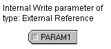

Write a display setpoint to a specific register
- Create a module containing an Internal Write parameter (located on the Special Items palette).
- Modify the Internal Write parameter properties by selecting a parameter type of External Reference.
- For the External parameter path field, click Browse.
- In the Browse dialog, select System Configuration in the Look in field.
- Select DST Parameters in the Object Type field.
- Starting at Physical Network, drill down until the dialog contains DSTs. The list includes dataset tags.
- Double-click the dataset tag that contains the parameter (register) that corresponds to the dataset value that you want to write to.
-
Double-click the parameter. This parameter can be linked to a
display's input data field. The result in Control Studio looks like this:
